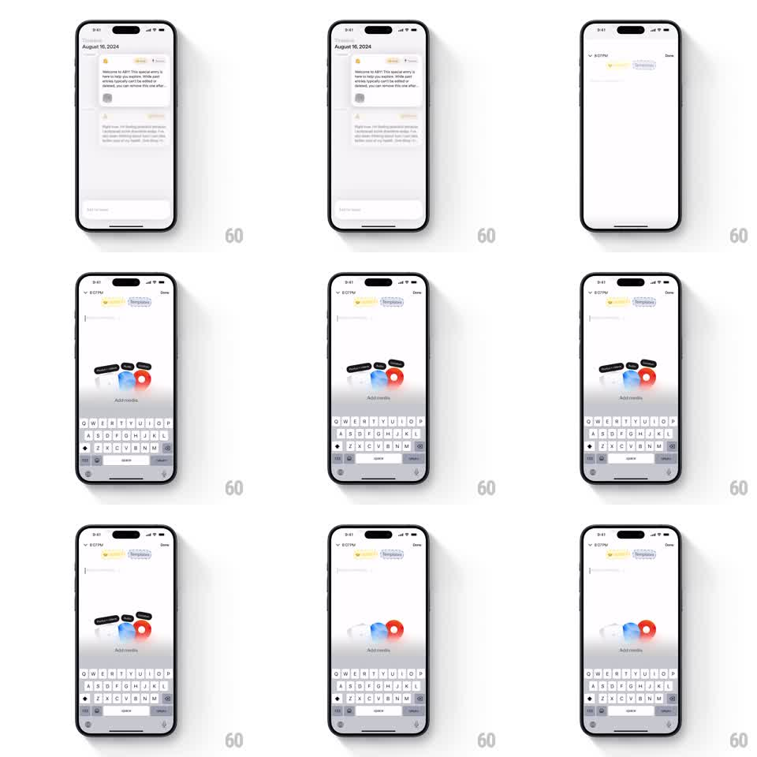

Media
Frame-by-frame

Rebuild this interaction 1:1: ABY's add-media menu - tapping the button fans a cluster of media options out with springy pops, and tapping again collapses them back into the button.

Rebuild this interaction 1:1: ABY's add-media menu - tapping the button fans a cluster of media options out with springy pops, and tapping again collapses them back into the button.
## Integration
Integration: stack-agnostic spec - springs given as stiffness/damping, timed motions as duration + curve; map every value to your framework and animation library of choice.
## Scene
A journal-entry composer ("August 16, 2024", text blocks, keyboard up). Above the keyboard, an "Add media" button; on tap, a cluster of media type bubbles (photo, video, audio, location, and more - colored rounded bubbles with dark label pills) fans out over the dimmed entry.
## Motion spec
Pattern: springy fan-out cluster, ~700ms open, 400ms close.
- On tap, the Add media button scales down slightly (0.95, 100ms) as the entry behind dims (250ms).
- The option bubbles pop out from the button's position in a loose cluster: each scales from 0 with a spring (stiffness 420 damping 14) and travels a short arc to its spot, 50ms staggered.
- The label pills fade in as their bubbles land (150ms).
- On tap-outside or re-tap, the cluster collapses: bubbles shrink back toward the button position in reverse stagger (40ms apart, 250ms each) and the entry undims.
- The keyboard stays up throughout.
## Calibration
- The cluster is loose and slightly irregular - not a radial grid.
- Each bubble's travel arc curves outward; straight-line pops read as a menu list.
## Reduced motion
Cluster fades in and out assembled.
## Don't miss
- Bubbles are colored with dark pill labels floating over them - two layers per option.
- The collapse is faster than the opening.